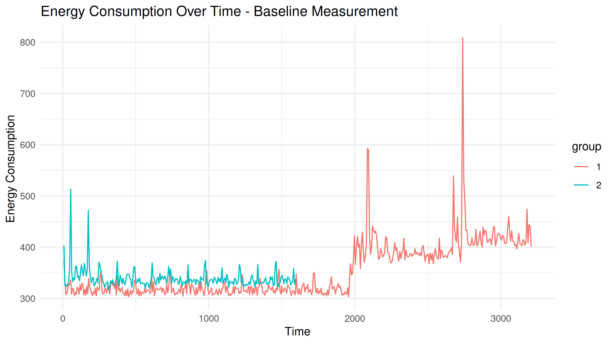
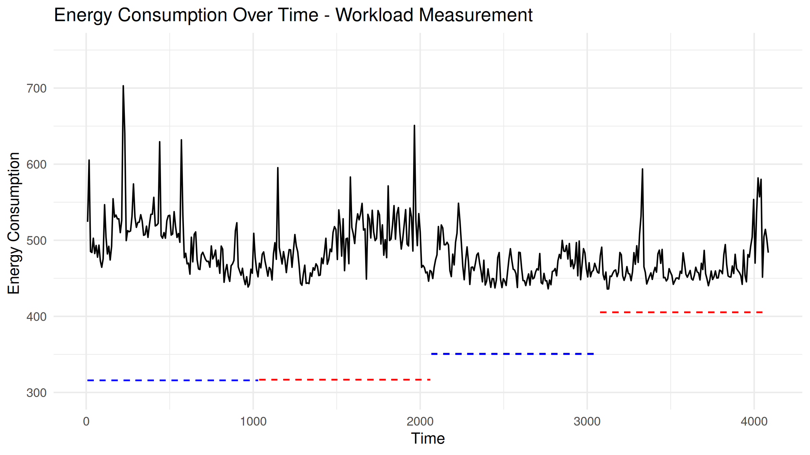
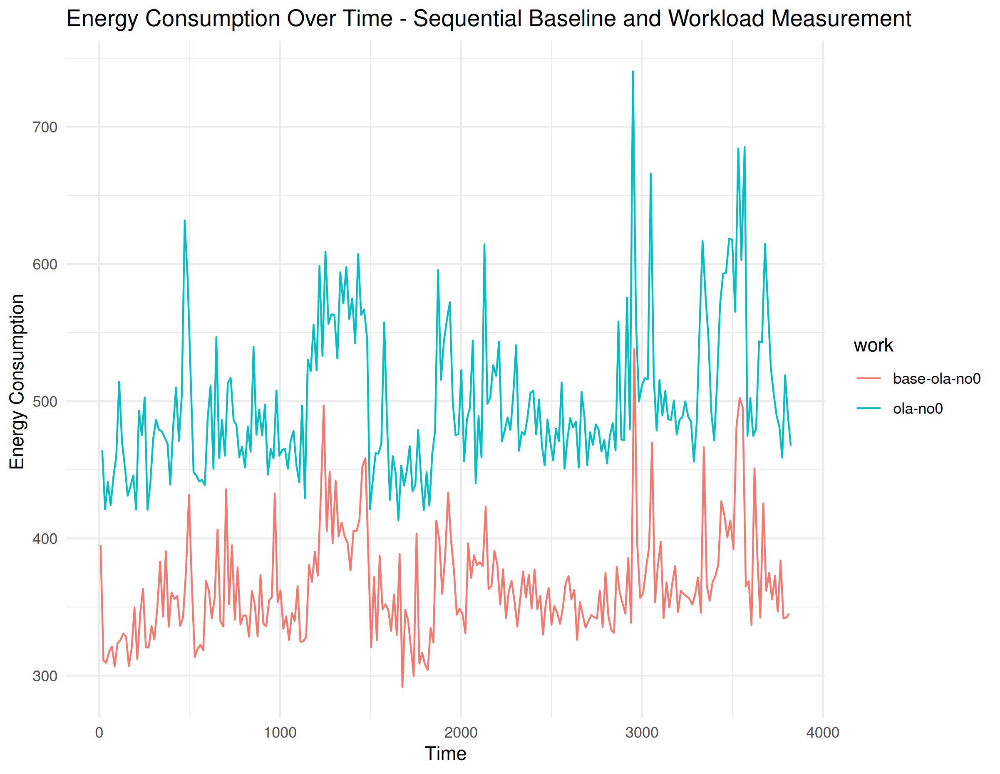

Can we measure energy consumption in population-based metaheuristics?
JJ Merelo, Cecilia Merelo-Molina
Universidad de Granada, Zenzorrito
Energy consumption is a problem
We need to reduce energy consumption in metaheuristics
We need to measure it first
Meet the Brave New Algorithm

Literature-inspired metaphor
Stratified population evolutionary algorithm
α caste → with itself, crossover + mutation
β only with α → crossover + mutation
γ, δ, ε → only mutation; γ → hillclimbing
Open source, written in Julia!
Very fine control of the exploration/exploitation tradeoff
Get it from CeciMerelo/BraveNewAlgorithm.jl at GitHub
It's only possible to measure energy spent by the system while our program is running
E(Workload) = E(measured) - E(baseline)
Baseline includes operating context + runtime overhead
But we are interested in our algorithm only
E(Workload) = E(measured) - E(baseline)
Maybe not?

Baseline is a fleeting thing...

We need to avoid variability
Or rather to track it
Sequential mixed strategy → 1 Baseline, 1 Workload
Again choppy waters... But at least the ships keep together
